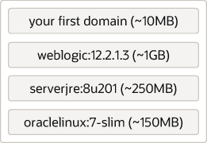
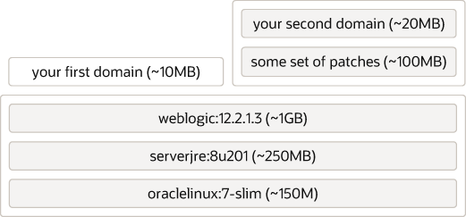
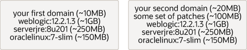

次の図に示すように、コンテナ・イメージはレイヤーで構成されます。 Oracle Container Registryから標準のweblogic:12.2.1.4イメージをダウンロードすると、コマンドdocker inspect container-registry.oracle.com/middleware/weblogic:12.2.1.4を使用してこれらのレイヤーを表示できます(ドメイン・レイヤーは表示されません)。 レイヤーを使用する必要はありませんが、レイヤーを効率的に使用することがベスト・プラクティスと考えられます。

レイヤー化は、コンテナ・イメージの重要な手法です。 レイヤーはイメージ間で共有されるため、重要です。 例を考えてみましょう。 次の図には、画層を使用して構築した2つのドメインがあります。 もう一方のドメインには、標準のWebLogicイメージで提供されているパッチの上に必要な追加パッチがいくつかあります。 これらは独自のレイヤーにインストールされ、その上の別のレイヤーに2つ目のドメインが作成されます。
3ノードのKubernetesクラスタがあり、このクラスタで両方のドメインを実行しているとします。 その後、各ノードで実行されている各ドメインのサーバーを使用して、最終的にすべてのイメージ・レイヤーがすべてのノードで必要になります。 次に示すアプローチ(つまり、標準的なイメージ・レイヤー化手法)を使用して、各ノードにこれら6つのレイヤーをすべて格納する必要があります。 サイズを合計すると、ノード当たり約1.5 GBになります。

ここで、レイヤーを使用せずに、各ドメインのイメージを構築し、すべてを1つの大きなレイヤーに配置する代替方法を考えてみましょう(多くの場合、これはレイヤーの「収縮」と呼ばれます)。 この場合、コンテンツは同じですが、イメージのサイズを合計すると、ノードごとに2.9 GBが取得されます。 これはサイズの約2倍です。

2つのドメインのみで問題が発生し始めます。 レイヤー化アプローチでは、新しいドメインごとに比較的小さい増分のみが追加されます。 非レイヤー化アプローチでは、新しい各ドメインは基本的にスタック全体を再度追加します。 10個のドメインがある場合、計算は次のようになります:
| レイヤーあり | 画層なし | |
|---|---|---|
| 共有レイヤー | 1.4GB | 0GB |
| 専用/異なるレイヤー | 10 x 10MB = 100MB | 10 x 1.5GB = 15GB |
| ノード当たりの合計 | 1.5GB | 15GB |
イメージのストレージ容量が実際にいかに増加し始めているかを確認できます。ストレージの問題ではありません。 Kubernetesがイメージからコンテナを作成する場合、イメージのサイズはコンテナの作成および起動にかかる時間に影響します。